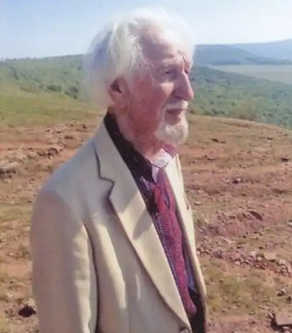
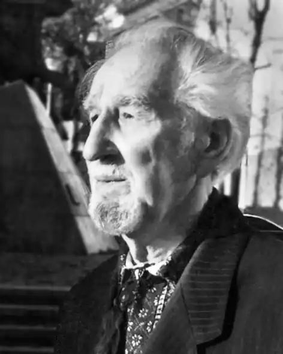

Василь Григорович Кубів народився 14 грудня 1926, в с. Деренівка, нині Теребовлянського району Тернопільської області. Український інженер, громадсько-політичний діяч, краєзнавець, учасник національно-визвольного руху, політв'язень.
Автор книг:
— "Національно-визвольна боротьба Теребовлян в 1940-50 роках" (Теребовля, 1993), — "Історія села Деренівка" (Львів, 1996), — нарису "Деренівка" у збірнику "Історія міст і сіл Теребовлянщини" (Тернопіль, 1997), — "Опозиція чи позиція" (2003), — "Дороги і долі" (2005, 2008). Кубів Василь — народився 14.12.1926р. у селі Деренівка Теребовлянського повіту. Початкову школу закінчив у рідному селі, опісля торговельну школу та культосвітній технікум (1946 р.) у м. Теребовлі. Ще навесні 1941 року став членом нелегальної організації "Юнацтво" ОУН. У районному "Юнацтві" пройшов курс підготовки пропагандистів і розвідників. У 1944 р. – учасник сільської самооборони 1946 – 1948 рр. – студент Львівського зооветеринарного інституту. Разом зі студентами Л.Стебельським, І. Желемом, Я. Дем'янчуком, Ю.Дяковим за зв'язок з ОУН був арештований і засуджений на десять років ув'язнення у концентраційних таборах ГУЛАГу. Покарання відбував у Башкирії. Після повернення працював у Львові, водночас учився в будівельному технікумі, а пізніше – на вечірньому відділенні Львівської політехніки. Працював на будівництві майстром, виконробом, гол. інженером, гол. спеціалістом науково-дослідного інституту, начальником відділу капітального будівництва Львівського міжобласного цукротресту. Склав кандидатські іспити, але захистити дисертацію не зміг– завадило біографічне минуле. У час перебудови організував на Янівському цвинтарі відновлення братської могили, де похований Міністр Андрій П'ясецький з уряду Ярослава Стецька, що був розстріляний німецьким гестапо разом з 28 членами ОУН. У 1990 р. заснував крайову Спілку політичних в'язнів України (СПВУ). Ініціював видавництво газети "Нескорені" при СПВУ. Ініціював й організував за громадські кошти спорудження пам'ятника жертвам комуністичних злочинів на площі Шашкевича у Львові. З 1992 по 1997 р. очолював обласний профспілковий комітет ветеранів праці "Нескорені". У 1995 році ініціював й став співзасновником Львівської обласної організації – Об'єднання ветеранів Другої світової війни. У 1998 році ініціював і став співзасновником Львівського товариства "Тернопільщина", в якому займає посаду першого заступника голови Товариства. У Товаристві В.Кубів відповідальний за випуск вісника "Тернопільщина". У 90-х роках брав участь у двох конференціях політичних в'язнів Литви як голова делегації від України, а також у двох Всесвітніх з'їздах українських політичних в'язнів у Києві. У травні 1995 р. був учасником Львівської делегації на 50-річному відзначенні звільнення в'язнів із фашистських концентраційних таборів в Австрії (Ебензе, Маутгаузен). У 1996 році видав книжку "Історія села Деренівка, нарис". У 2003 році видав книжку "Опозиція чи позиція". Друкував свої статті у часописах "Нескорені", "За вільну Україну", "Високий замок", Теребовлянській районній газеті "Воля", Тернопільській обласній "Свобода"та у Віснику"Товариства. Підготовив для школи і читальні "Просвіти" у рідному селі стенди з фотографіями всіх підпільників села, що загинули в боротьбі за волю України. Похований у родинному гробівці на 79 полі Личаківського цвинтаря.